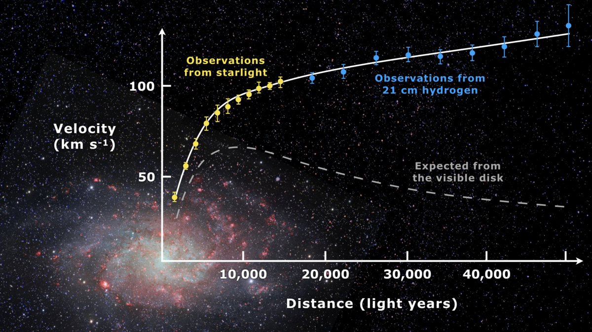
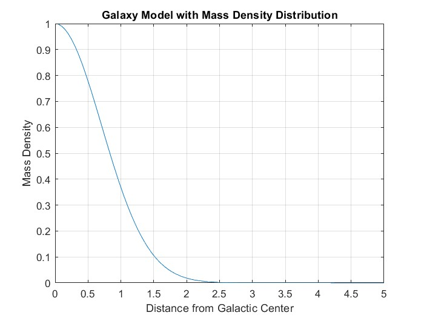
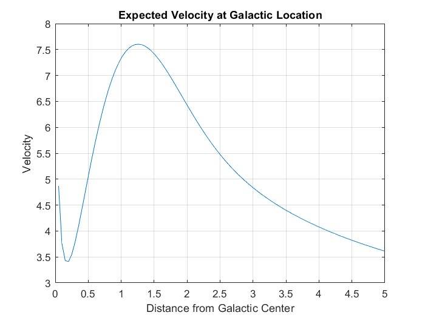

Numerical simulation showing that the observed galactic mass is not enough to justify the velocities of stars far from the galactic center.
When I first learned about dark matter, I was skeptical. The idea that a significant portion of the universe's mass was invisible and detectable only through its gravitational effects seemed like a wild theory. The main evidence was that the velocities of stars did not make sense, given the amount of gravity they should have been experiencing. I wanted to explore this more, since a galaxy's gravity is not very intuitive. Did spiral arms cause these measurements? Do all stars have near-circular orbits or could some of them be hyperbolic? Do bright sections of sky have more mass than we suspect?
To explore this concept further, I created this basic code to see for myself how dark matter might influence the gravitational behavior within galaxies. By simulating a galaxy with a distributed mass density, where certain regions were denser than others, you can visualize how these variations affect the overall gravitational forces and velocities.
I encourage users to play with the parameters and make your own conclusions.
This image shows a comparison of what the expected velocity in this spiral galaxy (Messier 33) is versus the actual measured velocities. A dark matter halo around the galaxy would explain why that region of space does not produce a lot of light and yet has a impact on velocity.
Source: Wikipedia
To simulate a galaxy based on visible light, let's assume a Gaussian mass distribution, where the majority of the mass is near the galactic center and it decays as you get further away. This is shown in the plot below, produced by the MATLAB script in the git repository.
This next plot then shows the expected velocity from this mass distribution. As you can tell, it resembles the expected curve in the first image. However, if you change the mass distribution to be uniform, such that the density of matter is equal along the entire radius of the galaxy, you might see something closer to the actual observed line. Try it yourself and any other mass distributions here!
If you have any questions, please contact me.
.png){kind=link}